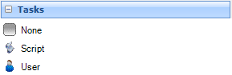
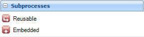
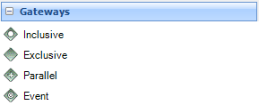
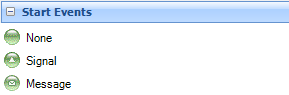
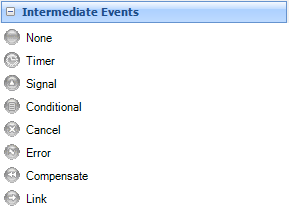
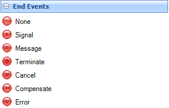
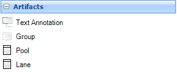

This bar includes all the components that will allow drawing an business process diagram. Once you have selected a button you must drag in the drawing area to insert the selected symbol.







Conectors Tasks Subprocesses Gateways Start Events Intermediate Events End Events Artifacts